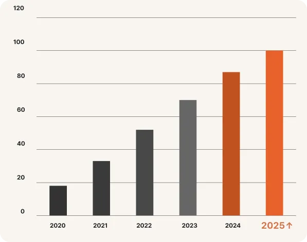
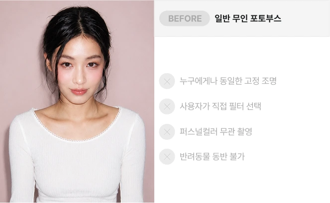
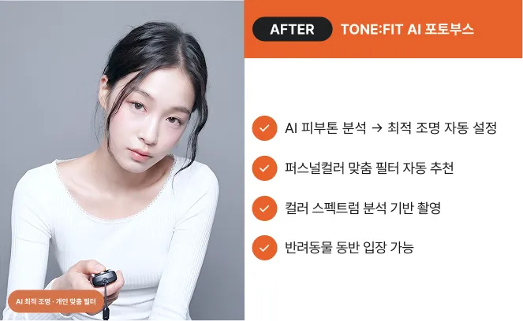
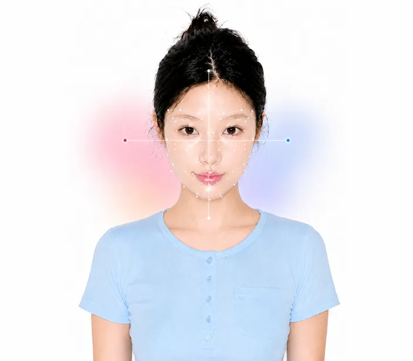
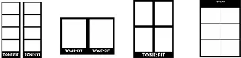

TONE:FITBRAND STORY
TONE:FIT은 독보적인 AI 컬러 분석 기술로 모든 고객의 고유한 분위기를 가장 완벽하게 이끌어냅니다.
TONE:FIT VISION
TONE
고객 고유의 피부 톤과 분위기
FIT
기술로 완성하는 최적의 맞춤 세팅
TONE:FIT : 모든 고객에게 완벽하게 맞춰진 프리미엄 포토 경험을 제공합니다
아직 아무도 만들지 않은
AI 퍼스널 컬러
무인 포토부스
일반 포토부스가 프레임을 선택하는 동안,
TONE:FIT은 AI가 피부를 분석해 가장 어울리는
조명·필터·컬러를 자동으로 설정합니다.
퍼스널컬러 검색량, 5년 새 1,200% 폭증
MZ세대를 중심으로 퍼스널컬러 진단 수요가 폭발적으로 성장하고 있습니다. 반려동물 양육 가구도 700만을 돌파했습니다. 그러나 이 두 시장을 동시에 공략한 무인 포토부스 브랜드는 아직 없습니다.
- 700만+
- 반려동물 양육 가구
- 무인 운영
- 100% 무인 키오스크
- 시장 최초
- AI 퍼스널컬러 포토부스

무엇이 다른가
일반 포토부스가 제공하는 '선택'과 달리, TONE:FIT은 AI가 분석하여 최적의 환경을 자동 설정합니다.

BEFORE
일반 무인 포토부스

AFTER
18K+ AI 퍼스널 컬러 분석
촬영이 아니라 분석에 가까운 기술
고객이 키오스크 앞에 서는 순간부터 결과물 출력까지, AI가 전 과정을 자동 처리합니다.
-
피부 명도·채도를 분석
AI가 피부 톤과 채도를 정밀 분석하여 자연스러운 톤 밸런스를 설계합니다.
-
분위기에 맞는 톤 추천
촬영 분위기와 스타일을 분석해 가장 어울리는 톤을 추천합니다.
-
조명 자동 보정
주변 조명 환경을 자동으로 인식해 밝기와 색온도를 자연스럽게 보정합니다.
-
퍼스널 컬러 기반 색감 튜닝
퍼스널 컬러와 피부 톤을 기반으로 얼굴이 더욱 돋보이는 색감을 제공합니다.

참고사항: *분석 결과는 촬영 환경, 메이크업, 조명에 따라 달라질 수 있습니다.
AI 퍼스널 컬러 분석 기반의 새로운 셀프 포토 경험
사용자의 피부톤·무드·조명·컬러를 분석해 가장 잘 어울리는 결과물을 제공합니다.
기술력으로 증명합니다
TONE:FIT AI가 쌓아온 데이터와 정확도
-
92%
AI 퍼스널컬러 분석 정확도
-
18000건 이상
누적 피부 분석 데이터 건수
-
15가지
피부톤 세부 분류 유형
-
30초
키오스크 내 AI 처리 속도
반려동물과 함께하는 소중한 순간
TONE:FIT은 반려동물과 함께 입장할 수 있는 AI 무인 포토부스입니다. 가족 구성원이 된 반려동물과 함께, 최적의 사진을 남겨드립니다.
-
반려동물 동반 촬영
소형견·고양이 등 소형 반려동물과 함께 촬영. 매장 청결 기준을 준수합니다.
-
AI 자동 최적화
반려동물이 있어도 AI가 조명과 필터를 자동 최적화하여 선명하고 아름다운 결과물을 만듭니다.
FRAME & SEASON CONTENT
계절과 트렌드, 다양한 콜라보 콘텐츠를 반영한 새로운 프레임 경험을 시즌별로 선보입니다.
- 총 0가지
- 00가지 다양한 프레임
TONE:FIT은 퍼스널 컬러 기반의 다양한 톤과 무드를 적용해 사용자에게 가장 잘 어울리는 프리미엄 경험을 제공합니다.


사람과 반려동물이 함께 가장 예쁘게 기록되는 공간
TONE:FIT AI PERSONAL COLOR를 통해 자연스러운 순간을 기록합니다.